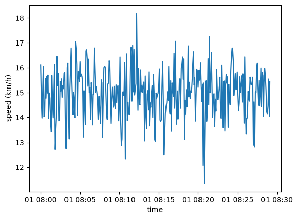

Examples¶
Synthetic commute: Munich Hbf to Pasing¶
The example below uses generate_track() rather
than a real recorded ride, so it contains no personal information and can
be freely shared in these docs. The route is a synthetic version of a real
commute - roughly following Landsberger Straße from Munich Hauptbahnhof to
Pasing Bahnhof - built from just three waypoints, a constant speed, and a
bit of GPS/speed sensor noise:
from polkupy import Ride
from polkupy.synthetic import generate_track
df = generate_track(
[(48.1393, 11.5579), (48.1427, 11.5033), (48.1488, 11.4612)],
speed_kmh=15.0,
elevation_m=550,
gps_noise_m=5.0,
speed_noise_kmh=1.0,
seed=42,
)
ride = Ride(df, ride_id="commute")
ride
Ride
- ride ID: commute
- start: 2026-01-01 08:00:00+00:00
- end: 2026-01-01 08:29:03.668260476+00:00
- duration: 0 days 00:29:03.668260476
- sampling rate: 5.0 s
![]()
That last line renders ride as a small route map plus a metadata card,
just like it would for a ride loaded with from_gpx()
and from_fit() (see also Quickstart).
elevation_m and speed_noise_kmh were both given above, so df
already carries ele and speed_kmh columns alongside the required
time, lat and lon:
df.columns.tolist()
['time', 'lat', 'lon', 'ele', 'speed_kmh']
Ride’s metadata properties work exactly as they
would on a real ride, with no code path aware that this one is synthetic:
ride.distance_km, ride.duration, ride.sampling_rate
(7.638691185221678,
Timedelta('0 days 00:29:03.668260476'),
Timedelta('0 days 00:00:05'))
speed_kmh here simulates a device’s own speed sensor, independent of
GPS. Because it’s already present, with_speed()
keeps it as-is rather than recomputing from position - pass
overwrite=True to compare the two:
gps_speed = ride.with_speed(overwrite=True)
ride.data["speed_kmh"].mean(), gps_speed.data["speed_kmh"].mean()
(np.float64(14.98509723871075), np.float64(15.775176779102697))
Finally, plotting the reported speed over the course of the ride:
import matplotlib.pyplot as plt
fig, ax = plt.subplots()
ax.plot(ride.data["time"], ride.data["speed_kmh"])
ax.set_xlabel("time")
ax.set_ylabel("speed (km/h)")
Text(0, 0.5, 'speed (km/h)')
